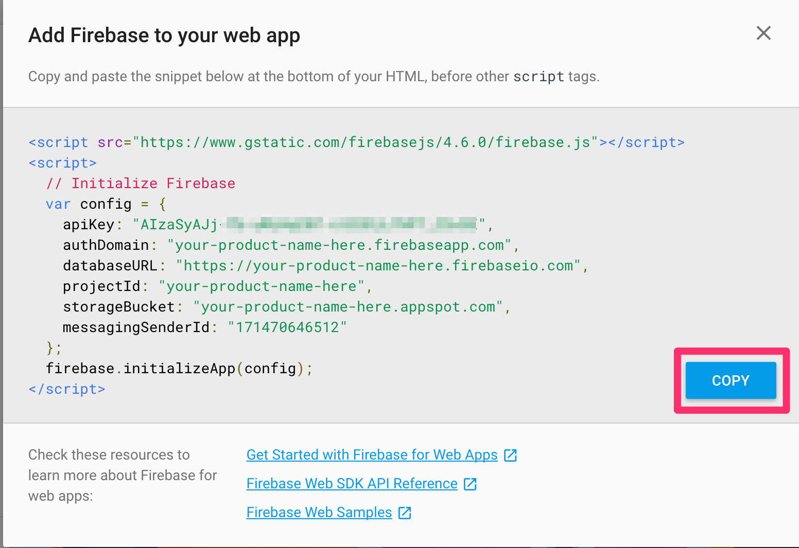

A project is a container for your application. Each project will allow for features such as hosting, databased, and authentication to be enabled.
Go to www.firebase.com and create an account
Select "Go To Console" on top of screen
Select "Add Project"
Type in your product's name and take note of the assigned projectID. This projectId is a unique identifier that will be used in your URL. If the ID is taken, and the system appends random charectors to the end, you have the ability to change it to something else.
Click on "Add Firebase to your web app"
We will likely require this same configuration across multiple files. In order to reuse the same code across file copy the configuration code, and paste it into a new file. You might call it something like "firebase_config.js"

Copy configuration
Remove the firebase library script tag and add it to your HTML, then remove script tags from the JS files. You should only have Javascript in your Javascript file.
In order to write or read data using Firebase you need to use the library's pre-defined API. In the examples below you will notice that each of these methods starts off by specifying "firebase.database()"
Writing Data
You can use set() to save data to a specified reference, replacing any existing data at that path. For example a social blogging application might add a user with set() as follows:
The "ref()" part allows you to structure your database however you'd like. In the example below, I am telling firebase to create an object named "users" and inside of that object store objects that start with a userId. It would end up looking something like this:
Here is an example of the code implemented, and storing to the data base. Make sure that the HTML file is calling your "firebase_config.js" so it knows your account.